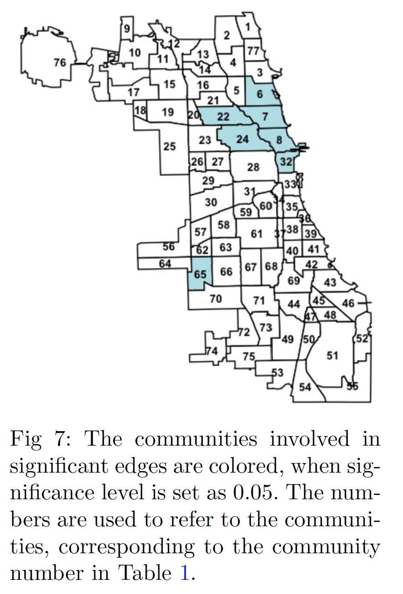

Research by TopicGraphical Models: Methods and Theory with Missing DataHigh-dimensional graphical models have been a powerful tool for learning connections or interaction patterns among a large number of variables, with wide applications such as learning stock networks, social networks, etc. While most prior work focuses on the case when all variables are measured simultaneously, one typical challenge in real data sets is that only certain subsets of variables can be measured together, or can be measured sufficiently many times. To estimate the graph (conditional independence relationship) or certain characteristics of the graph accurately, novel statistical methods and theory need to be developed. I am actively working on this direction and happy to collaborate on related topics! Papers:
Interpretable Machine LearningWith machine learning models being implemented everywhere in modern life, making them interpretable and trustworthy is a crucial task for researchers from different domains. As a statistician, I am passionate about contributing to the challenging problems in interpretable machine learning through statistical lens, e.g., statistical theory and inference methods. Papers:
High-dimensional Networks Estimation in Time Series ModelsHigh-dimensional autoregressive models can capture how the past eventsstatus associated with a huge collection of nodes influence their future eventsstatus, where the influence patterns can reveal underlying network structures. For example, the past firing of neurons may trigger or inhibit the future firings of their neighbors; past posts of a twitter user may also influence the likelihood of his/her followers to send new tweets. The influence network among these nodes can then be encoded by the high-dimensional autoregressive parameter. The estimation and testing problem for the underlying network structure imposes both methodological and theoretical challenges. Papers:
 Tensor Data AnalysisTensor data has attracted wide interest in recent years since it contains valuable high-order information, while its high-dimensionality imposes numerous statistical and computational challenges. One of my research interest is to develop efficient and statistically accurate algorithms for solving real-world tensor problems. Papers:
Non-convex OptimizationNon-convex optimization problems arise frequently from both modern machine learning algorithms (e.g., deep neural networks and Gaussian processes) and complex data structures (missing data). Although being challenging solely from an optimization perspective, these problems can often lend a helping hand from certain statistical modeling. I am interested in the intersection between statistics and optimization, especially when efficient non-convex algorithms can still exhibit strong statistical performance. Papers:
|